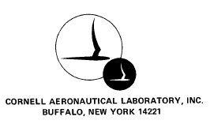
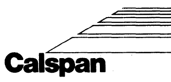

<HTML>
<!-- CREATION DATE: 18/11/2002 -->

<!-- Mirrored from http://bicycle.tudelft.nl/schwab/Bicycle/calspan/index.htm by HTTrack Website Copier/3.x [XR&CO], Sat, 17 Oct 2026 15:02:02 GMT -->
<HEAD>
<TITLE></TITLE>
<META NAME="Description" CONTENT="">
<META NAME="Keywords" CONTENT="">
<META NAME="Author" CONTENT="arend schwab">
<META NAME="Generator" CONTENT="Microsoft FrontPage 6.0">
<META HTTP-EQUIV="Content-Type" CONTENT="text/html; charset=iso-8859-1">
<base target="_blank"></HEAD>

<!-- Mirrored from http://bicycle.tudelft.nl/schwab/Bicycle/calspan/index.htm by HTTrack Website Copier/3.x [XR&CO], Sat, 17 Oct 2026 15:02:02 GMT -->
</HTML>
.
<HTML>
<HEAD>
</HEAD>
<BODY BGCOLOR="#E6F5FF" TEXT="#000000" LINK="#0000FF" VLINK="#800080" ALINK="#FF0000"> 
<center>
<table border="0" cellpadding="0" cellspacing="0" style="border-collapse: collapse" bordercolor="#111111" width="100%" id="AutoNumber1">
  <tr>
    <td width="55%">
    <p align="center"><font face="Verdana" size="5"><b>Calspan Bicycle and 
	Motorcycle Dynamics Reports</b></font><font face="Verdana" style="font-size: 9pt"><br>
&nbsp;</font></td>
    <td width="1%">
    <p align="center">
    </td>
    <td width="15%" valign="bottom">
    <p align="right">
    </td>
  </tr>
</table>
<table border="0" cellpadding="0" cellspacing="0" style="border-collapse: collapse" bordercolor="#111111" width="100%" id="AutoNumber2" bgcolor="#3399FF" height="20">
  <tr>
    <td width="100%">
    <p align="right">
    <font face="Verdana" size="1" color="#FFFFFF">
	<a href="http://tudelft.nl/" style="text-decoration: none; font-weight: 700">
	<font color="#FFFFFF">Delft
    University of Technology&nbsp; &nbsp; </font></a> </font></td>
  </tr>
</table>
<p align="left"><font face="Verdana" style="font-size: 9pt">August 19, 2010, 
Green Bay, WI, USA</font></p>
<p align="left"><font face="Verdana" style="font-size: 9pt">The following files 
are scans of reports and other documents produced at CALSPAN (originally CAL, or 
Cornell Aero Labs) relating to single track vehicle research.<br>
<br>
CALSPAN had a productive and active vehicle dynamics department headed by 
<a href="http://www.bentleypublishers.com/automotive-reference/history/equations-of-motion-paperback-edition.html">Bill 
Milliken</a>. They did some work for the Department of Transportation on motorcycle 
dynamics, then used this expertise and experience to win additional government 
contracts, and also proprietary contracts with Schwinn, Harley Davidson, and 
others. The CALSPAN efforts included tire testing, tire modeling, dynamics 
modeling, dynamics experiments, and lastly a sustained effort to incorporate 
rider control. Posted here are some final reports, some progress reports, and 
some other materials. This may not be a complete list.<br>
<br>
The owners of Schwinn intellectual property have generously given their consent 
to post the Schwinn-sponsored research. Also the government-sponsored research 
is posted. But reports to Harley Davidson will not be posted, unless their 
permission can be gained.<br>
<br>
Sincere thanks are due to Forrest Yelverton for granting permission to hold and 
post these scans, and especially 
<a href="http://www.millikenresearch.com/index.html">Doug Milliken</a>, who was at least partially 
involved in some of the reported research, knew the people involved, and has 
maintained this archive. Doug kindly made these scans August 17 and August 18, 
2010, while he was generously hosting and supporting my efforts to uncover what 
was in his files.<br>
<br>
In future we will expand this section, summarize the general contents of each 
paper, and give a list of other papers not yet scanned.<br>
<br>
Jim Papadopoulos<br>
<a href="mailto:papadopoulos@alum.mit.edu">papadopoulos@alum.mit.edu</a>&nbsp;&nbsp;&nbsp;&nbsp;&nbsp;&nbsp;&nbsp;&nbsp;&nbsp;&nbsp;&nbsp;&nbsp;&nbsp;&nbsp;&nbsp;&nbsp;&nbsp;&nbsp;&nbsp;&nbsp;&nbsp;&nbsp;&nbsp;&nbsp;&nbsp;&nbsp;&nbsp;&nbsp;&nbsp;&nbsp;&nbsp;&nbsp;&nbsp;&nbsp;&nbsp;
</font></p>


<HR WIDTH=100% NOSHADE>


<p align="left"><font face="Verdana" style="font-size: 9pt">The Calspan reports:</font></p>
<p align="left"><font face="Verdana" style="font-size: 9pt">
<a href="CAL_4426-MSF-Proposal-March1974.pdf">
CAL_4426-MSF-Proposal-March1974.pdf</a></font></p>
<p align="left"><font face="Verdana" style="font-size: 9pt">
<a href="CAL_Doehring-xlateLotsof-1957.pdf">CAL_Doehring-xlateLotsof-1957.pdf</a></font></p>
<p align="left"><font face="Verdana" style="font-size: 9pt">
<a href="CAL_DOT-No-73020.pdf">CAL_DOT-No-73020.pdf</a></font></p>
<p align="left"><font face="Verdana" style="font-size: 9pt">
<a href="CAL_Lynch-Roland-1972.pdf">CAL_Lynch-Roland-1972.pdf</a></font></p>
<p align="left"><font face="Verdana" style="font-size: 9pt">
<a href="CAL_Milliken-capabilities-c1974.pdf">
CAL_Milliken-capabilities-c1974.pdf</a></font></p>
<p align="left"><font face="Verdana" style="font-size: 9pt">
<a href="CAL_Milliken-MotorcycleTireSpec-Oct1975.pdf">
CAL_Milliken-MotorcycleTireSpec-Oct1975.pdf</a></font></p>
<p align="left"><font face="Verdana" style="font-size: 9pt">
<a href="CAL_Rice-CamberTireTest-Apr1975.pdf">
CAL_Rice-CamberTireTest-Apr1975.pdf</a></font></p>
<p align="left"><font face="Verdana" style="font-size: 9pt">
<a href="CAL_Rice-CamberTireTest-Feb1975.pdf">
CAL_Rice-CamberTireTest-Feb1975.pdf</a></font></p>
<p align="left"><font face="Verdana" style="font-size: 9pt">
<a href="CAL_Rice-Dec1974A.pdf">CAL_Rice-Dec1974A.pdf</a></font></p>
<p align="left"><font face="Verdana" style="font-size: 9pt">
<a href="CAL_Rice-Dec1974B.pdf">CAL_Rice-Dec1974B.pdf</a></font></p>
<p align="left"><font face="Verdana" style="font-size: 9pt">
<a href="CAL_Rice-Dec1975A-motorcycles.pdf">CAL_Rice-Dec1975A-motorcycles.pdf</a></font></p>
<p align="left"><font face="Verdana" style="font-size: 9pt">
<a href="CAL_Roland-June1972A.pdf">CAL_Roland-June1972A.pdf</a></font></p>
<p align="left"><font face="Verdana" style="font-size: 9pt">
<a href="CAL_VJ-2888-K.pdf">CAL_VJ-2888-K.pdf</a></font></p>
<p align="left"><font face="Verdana" style="font-size: 9pt">
<a href="CAL_VJ-2888-K-appA.pdf">CAL_VJ-2888-K-appA.pdf</a></font></p>
<p align="left"><font face="Verdana" style="font-size: 9pt">
<a href="CAL_YA-3063-K-1.pdf">CAL_YA-3063-K-1.pdf</a></font></p>
<p align="left"><font face="Verdana" style="font-size: 9pt">
<a href="CAL_YA-3063-K-2.pdf">CAL_YA-3063-K-2.pdf</a></font></p>
<p align="left"><font face="Verdana" style="font-size: 9pt">
<a href="CAL_ZN-5144-K-1.pdf">CAL_ZN-5144-K-1.pdf</a></font></p>
<p align="left"><font face="Verdana" style="font-size: 9pt">
<a href="CAL_ZN-5144-Supplement.pdf">CAL_ZN-5144-Supplement.pdf</a></font></p>
<p align="left"><font face="Verdana" style="font-size: 9pt">
<a href="CAL_ZN-5361-K.pdf">CAL_ZN-5361-K.pdf</a></font></p>
<p align="left"><font face="Verdana" style="font-size: 9pt">
<a href="CAL_ZN-5431-V-1.pdf">CAL_ZN-5431-V-1.pdf</a></font></p>
<p align="left"><font face="Verdana" style="font-size: 9pt">
<a href="CAL_ZN-5431-V-2.pdf">CAL_ZN-5431-V-2.pdf</a></font></p>
<p align="left"><font face="Verdana" style="font-size: 9pt">
<a href="CAL_ZN-5431-V-3.pdf">CAL_ZN-5431-V-3.pdf</a></font></p>
<p align="left"><font face="Verdana" style="font-size: 9pt">
<a href="CAL_ZN-5431-V-summary.pdf">CAL_ZN-5431-V-summary.pdf</a></font></p>
<p align="left"><font face="Verdana" style="font-size: 9pt">
<a href="CAL_ZN-5571-V.pdf">CAL_ZN-5571-V.pdf</a></font></p>
<p align="left"><font face="Verdana" style="font-size: 9pt">
<a href="CAL_ZN-5571-V-1.pdf">CAL_ZN-5571-V-1.pdf</a></font></p>
<p align="left"><font face="Verdana" style="font-size: 9pt">
<a href="CAL_ZN-5571-V-2.pdf">CAL_ZN-5571-V-2.pdf</a></font></p>
<p align="left"><font face="Verdana" style="font-size: 9pt">
<a href="CAL_ZN-5740-V-1.pdf">CAL_ZN-5740-V-1.pdf</a></font></p>
<p align="left"><font face="Verdana" style="font-size: 9pt">
<a href="CAL_ZN-5899-V-1.pdf">CAL_ZN-5899-V-1.pdf</a></font></p>
<p align="left"><font face="Verdana" style="font-size: 9pt">
<a href="CAL_ZN-5899-V-1-p7%268.pdf">CAL_ZN-5899-V-1-p7&amp;8.pdf</a></font></p>
<p align="left"><font face="Verdana" style="font-size: 9pt">
<a href="CAL_ZN-5921-V-2.pdf">CAL_ZN-5921-V-2.pdf</a></font></p>
<p align="left"><font face="Verdana" style="font-size: 9pt">
<a href="CAL_ZS-5157-K-1.pdf">CAL_ZS-5157-K-1.pdf</a></font></p>
</center>


<HR WIDTH=100% NOSHADE>


<p align="center"><font face="Verdana" style="font-size: 9pt">Contact Webmaster
<a href="mailto:a.l.schwab@tudelft.nl">Arend L. Schwab</a> </font></p>
<script src="../../../../www.google-analytics.com/urchin.js" type="text/javascript">
</script>
<script type="text/javascript">
_uacct = "UA-917181-2";
urchinTracker();
</script>
</BODY>
</HTML>

<comment>